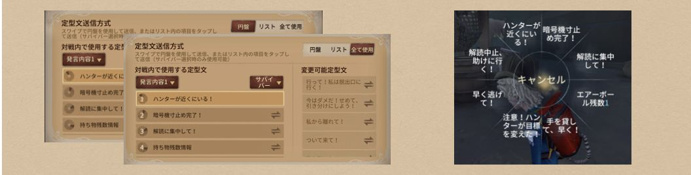
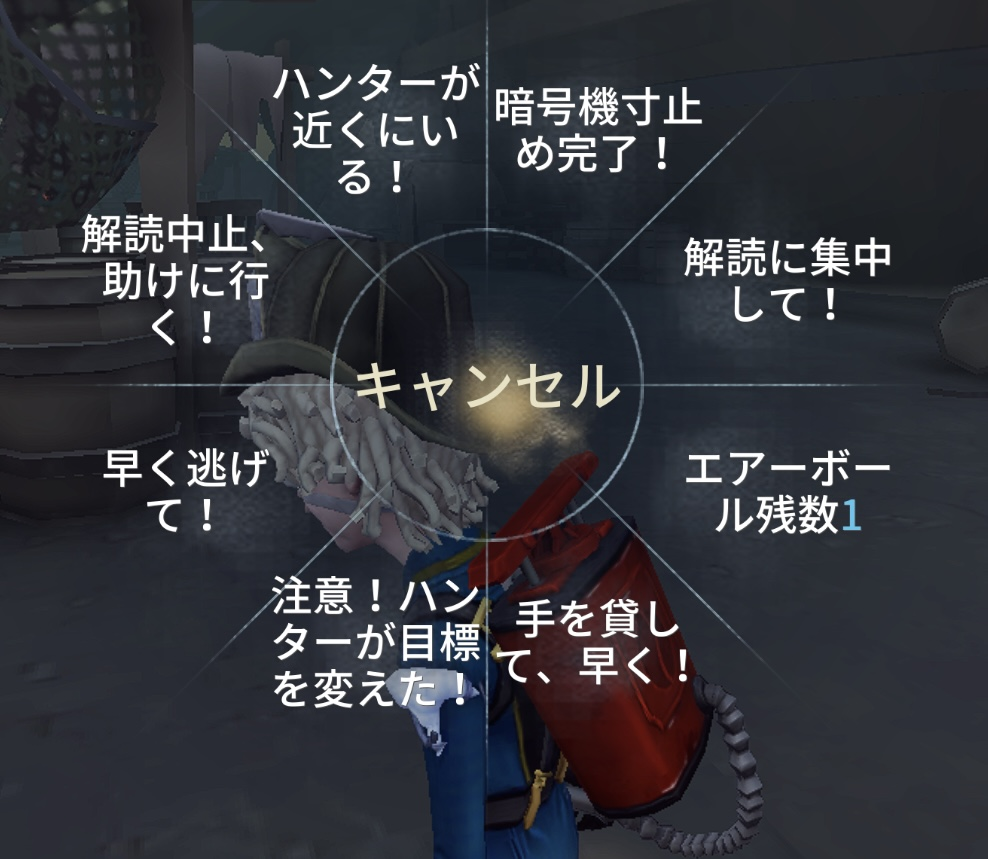
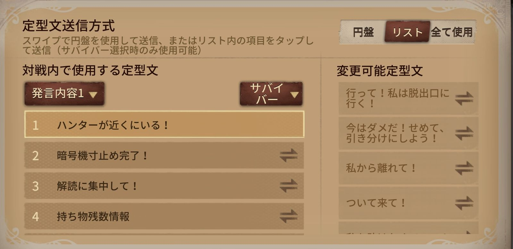

プロレベルの連携を実現する究極の攻略法
定型文システムに重要な調整が実施されました。順序の調整、並び替え、スキル関連の定型文が追加、サバイバーの設置物自動化チャット、ハンターが近くにいる自動化チャットにより、暗号機寸止め自動化チャット、進歩暗号機案内自動化チャットより効率的なコミュニケーションが可能になります。
エリア、キャラ、セット、スキルカテゴリーの定型文が追加され、順序の調整が可能になりました。
定型文カテゴリーの並び替え機能が追加されました。
スキルカテゴリーにおいて、一部キャラのスキル関連の定型文が追加されました。
機械技師、祭司、踊り子、納棺師、玩具職人、教授、火災調査員がマップ内でスキル創造物を設置した際、「____（エリア名）に____（スキル創造物）がある」という即時定型文が自動的に発動します。
近距離でハンターを視認し、ハンターとの間に障害物が存在しない場合、「____（ハンター名）が近くにいる」という即時定型文が自動的に発動します。
最後の暗号機の暗号解読進捗が98%に達した際、その暗号機を解読しているプレイヤーは「暗号機寸止め完了」という即時定型文が自動的に発動します。
暗号機の解読を停止して一定距離離れた後、その暗号機を誰も解読していない場合、暗号機の進捗に応じて「____（エリア名）の暗号機は解読が進んでいない/進んでいる」という定型文が自動的に発動します。
定型文システムに重要な調整が実施されました。クールタイムの変更、不要な定型文の削除、新規定型文の追加により、より効率的なコミュニケーションが可能になります。
定型文のクールタイムが3秒に統一されました。
「______は位置を教えて！」の定型文が削除されました。
サバイバー陣営に重複キャラが存在しない場合、2つのキャラ名を入力する定型文で同じキャラ名を入力できなくなりました。
ハンターキャラが公開されている対戦では、「ハンターは______だ！」が削除され、スキルカテゴリにそのハンターに関連する定型文が自動的に表示されます。定型文でのハンター名変更は不可。
通常カテゴリに「進捗の多い暗号機はどこ？」が追加されました。
天賦「フライホイール効果」携帯時、スキルカテゴリに「フライホイール効果クールタイム：__秒」が追加。クールタイムはシステムが自動入力します。
定型文チャットには主に3種類あり、それぞれの特徴と最適な使用場面を詳しく解説します。

8個のチャットが試合中に最も迅速に送信できるシステムです。事前に設定画面から使用頻度の高い8個のチャットを厳選して配置しておくことが重要です。

送信できるメッセージ数に制限がなく、状況に応じた詳細な情報共有が可能です。設定画面で使用頻度の高いチャットを上位に配置し、アクセスしやすくしておきましょう。
詳細な進捗報告や暗号機位置の共有
作戦の詳細な打ち合わせ
次の行動計画の共有
複雑な状況説明や最終戦略の伝達
円盤チャットとリストチャットの両方を使用できる万能型システムです。設定画面で円盤部分とリスト部分を戦略的に配置することで、あらゆる場面に対応できます。
自分のスポーン位置を即座に報告。「○○エリアにスポーン」と具体的なエリア名で伝達し、「解読に集中して！」で行動意図を明確化
周囲の暗号機や重要設備の位置確認。占い師・弁護士がいる場合はハンター情報の詳細報告
チェイス担当決定、他メンバーの解読位置調整、救助担当の事前選定
チェイス状況に基づく解読計画の調整
救助担当者の事前決定と準備
チェイス補助やハンターの注意逸らし
終盤に向けた出口ゲートの解読計画
「救助開始！」で明確な意思表示
「ハンター戻ってくる」「安全救助完了」
「治療してください」「治療場所移動」
解読再開や隠蔽の指示
地下室回避やハッチ探索の戦略
最適な生存戦略の選択
ハンターの特殊能力に対する対応策
問題: 不要な情報の連続送信
対策: 重要度の高い情報のみを厳選
改善: 簡潔で明確な表現の習得
問題: 古い情報の遅延送信
対策: リアルタイム性の重視
改善: 状況変化への素早い対応
問題: 重要な情報の共有漏れ
対策: チェックリスト形式での確認
改善: 継続的な意識向上
ハンターの行動パターンを分析し、次の行動を予測して事前に味方に警告を送る高度なテクニックです。
各状況に応じた最適なチャットパターンを事前に設定し、瞬時に適切な情報を送信できるシステムの構築です。
ハンターとサバイバー双方の心理を理解し、適切なタイミングでの情報開示により戦況を有利に導く戦術です。
定型文チャットシステムは単なるコミュニケーションツールではなく、チーム全体の戦術レベルを飛躍的に向上させる重要な戦略要素です。音声機能と組み合わせることで、より直感的で迅速な情報共有が可能になり、高度な連携プレイの実現に不可欠な要素となります。
最も重要なのは、個人のスキル向上だけでなく、チーム全体での成長を意識することです。定型文チャットを通じて構築される信頼関係と連携は、ゲーム内だけでなく、より深いチームワークの基盤となります。継続的な練習と改善により、プロレベルの連携を目指しましょう！
みんなのコメント